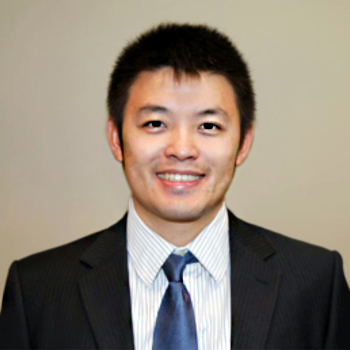

<div class="container">
    <div class="row">
        <div id="speaker-detail" class="col-lg-6 col-lg-offset-3">
            <div class="row">
                <button title="Close (Esc)" type="button" class="mfp-close">×</button>
                <div class="col-md-4 col-lg-4">
                    
                    <br />
                </div>
                <div class="col-md-8 col-lg-8">
                    <h2>Shaoyu Chang MD, MPH, RAC 張劭聿 醫師</h2>
                    <h3>Senior Research Analyst, Life Science Nation</h3>
                    <p>Shaoyu is Senior Research Analyst at Life Science Nation, a Boston-based research and consulting firm that connects products, services and capital in the life sciences arena. Shaoyu specializes in investor outreach, market research, and technical review and writing in support of biotech and medtech entrepreneurs with their fundraising campaigns. He also contributes to LSN’s Next Phase Newsletter. Prior to LSN, Shaoyu served as Research Scholar at Sanford School of Public Policy of Duke University and worked closely with Prof. Anthony So in Program on Global Health and Technology Access. His research focused on the global R&D of medical innovations against antimicrobial resistant microorganisms. Shaoyu received a Master of Public Health from Harvard Chan School of Public Health and an M.D. from National Taiwan University. Shaoyu is US Regulatory Affairs Certified with extensive experiences in clinical trials and pharmaceutical development.
                    </p>
                </div>
            </div>
        </div>
    </div>
</div>